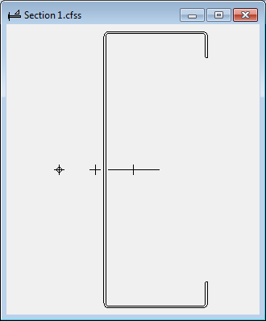

The section window displays a graphic of the section. Every open section has a corresponding section window, whether it was created as a new section with the Section Wizard, or opened from a section file or a section library.

The graphic contains some markers in addition to the geometry. Each part in the section contains a dot at its center of gravity. The origin of the section is shown as a plus (+). After any computations, the principal axes are shown as perpendicular lines. The long line is the major axis and the short line is the minor axis. The shear center is identified as a plus with a circle.
You may use the mouse to select parts and elements. Selected elements are shown highlighted in the graphic. You may select any element in the section simply by clicking on it. You may select multiple consecutive elements on a part by clicking on one element and dragging to another element. You may select an entire part by double-clicking on it. A pop-up menu of edit commands is available by clicking with the right mouse button.
You may also measure the distance between two points on the section. Hold the Ctrl key and click the first point. CFS will select the nearest endpoint, midpoint, or arc quadrant, and show a point marker in the window. Then hold the Ctrl key and click the second point to display dimension information between the two points. To remove the dimensions, hold the Ctrl key and click one more time.
You may also zoom and pan the display using either the mouse or the keyboard.
Here is a summary of the mouse and keyboard methods:
| Action | Mouse | Keyboard | |
| Select Elements | Click, Click & Drag | Up, Down, Shift-Up, Shift-Down | |
| Select Part | Double-Click | ||
| Select Point | Ctrl-Click | ||
| Zoom In/Out | Ctrl-Mouse Wheel | Page Up, Page Down | |
| Pan Up/Down | Mouse Wheel | Ctrl-Up, Ctrl-Down | |
| Pan Left/Right | Shift-Mouse Wheel | Ctrl-Left, Ctrl-Right | |
| Drag | Middle-Click & Drag | ||
| Zoom All | Home or Escape | ||
| Edit Menu | Right-Click | Apps Key |